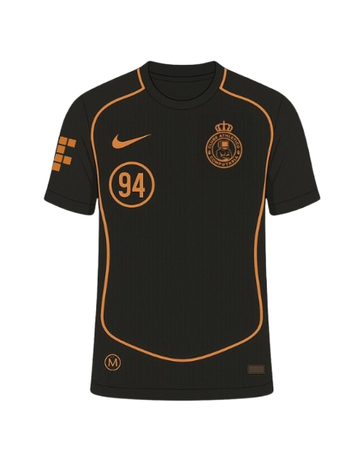
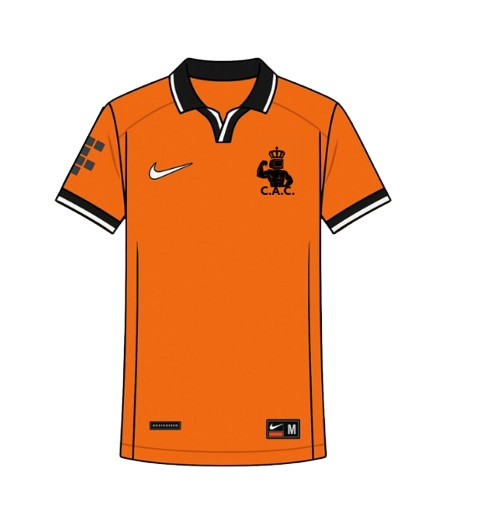

CAMISA 1:
Apresentamos a nova camiseta oficial edição especial – um modelo que une estilo, identidade e performance.
Com um design marcante e moderno, a peça se destaca pelo seu tom preto elegante, realçado por detalhes em laranja queimado, criando um visual arrojado e exclusivo. O número 94 estampado no peito faz referência a um marco histórico, enquanto o escudo no lado esquerdo representa orgulho, tradição e pertencimento.
Assinada pela Nike, a camiseta traz qualidade premium nos materiais e no corte, garantindo conforto e respirabilidade, ideal tanto para o uso esportivo quanto para o casual. As linhas curvas no peito e nas laterais reforçam o dinamismo do design, e os símbolos sutis nas mangas e barra inferior completam o visual com sofisticação.
Ideal para torcedores apaixonados e colecionadores exigentes, essa camiseta não é apenas uma peça de vestuário — é uma declaração de identidade.
Vista a história. Sinta a evolução. Seja parte do legado.

CAMISA 2:
Apresentamos a nova camisa oficial do Clube Atlético Computaria – edição laranja clássica, uma peça que une tradição acadêmica, inovação e identidade esportiva.
Com um visual imponente em laranja vibrante, essa camisa representa a energia e o espírito competitivo do Clube Atlético Computaria. O escudo do clube, em preto, ocupa posição de destaque no peito, simbolizando orgulho, união e excelência. A gola polo preta com detalhes em branco traz um toque de elegância ao design, equilibrando perfeitamente o estilo clássico com uma pegada moderna.
Desenvolvida pela Nike, a camisa oferece tecnologia de ponta em conforto e desempenho, com tecido leve e respirável, ideal para o uso em treinos, jogos ou no cotidiano. Os detalhes nas mangas e o símbolo tático no braço reforçam a personalidade única da peça, pensada para quem vive a Computaria com paixão.
Mais do que uma camisa, é um símbolo de pertencimento e tradição para quem faz parte dessa história.
Clube Atlético Computaria – Vista o legado. Jogue com orgulho.